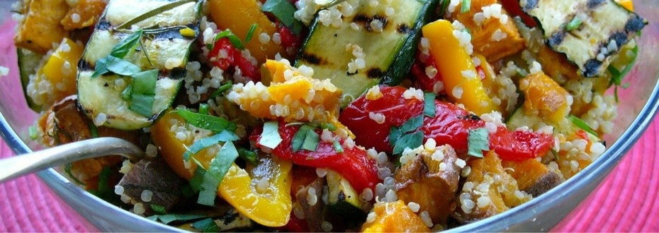

Ensalada de Quinoa con Vegetales y Aderezo de Limón
La ensalada de Quinoa con aderezo de limón es una opción saludable y
deliciosa. La quinoa aporta nutrientes esenciales, mientras que el limón
en la vinagreta ofrece propiedades beneficiosas. En Quinoa Vital,
encontrarás la receta completa para disfrutar esta ensalada fresca y
llena de sabor. ¡Descúbrela!
Tiempo de preparacion
Cocinar la quinoa: 15-20 minutos.
Preparar los vegetales (lavar, pelar y cortar): 10-15 minutos.
Hacer el aderezo de limón: 5 minutos.
Mezclar todos los ingredientes: 5 minutos.
Instrucciones
1. Cocinar la quinoa: Enjuaga la quinoa bajo agua fría. En una
cacerola, lleva las 2 tazas de agua a ebullición. Agrega la quinoa,
reduce el fuego a bajo, tapa y cocina por 15 minutos o hasta que el
agua se haya absorbido y la quinoa esté esponjosa. Retira del fuego
y deja enfriar.
2. Preparar los vegetales: En un tazón grande, combina el pepino,
pimiento rojo, pimiento amarillo, zanahoria, tomates cherry, cebolla
roja y perejil.
3. Hacer el aderezo: En un tazón pequeño, bate juntos el aceite de
oliva, el jugo de limón, la miel o jarabe de arce, el ajo picado, la
sal y la pimienta hasta que estén bien mezclados.
4. Mezclar todo: Una vez que la quinoa esté fría, agrégala al tazón
con los vegetales. Vierte el aderezo sobre la ensalada y mezcla bien
para combinar todos los ingredientes.
5. Servir: Espolvorea el queso feta desmoronado por encima, si lo
estás usando. Sirve la ensalada fresca o a temperatura ambiente
Esta ensalada es perfecta como plato principal ligero o como
acompañamiento.¡Disfruta!
Ingredientes
1 taza de quinoa
2 tazas de agua
1 pepino, picado en cubos
1 pimiento rojo, picado en cubos
1 pimiento amarillo, picado en cubos
1 zanahoria, rallada
1 taza de tomates cherry, cortados a la mitad
1/4 taza de cebolla roja, finamente picada
1/4 taza de perejil fresco, picado
1/4 taza de queso feta desmoronado (opcional)
Valores nutricionales